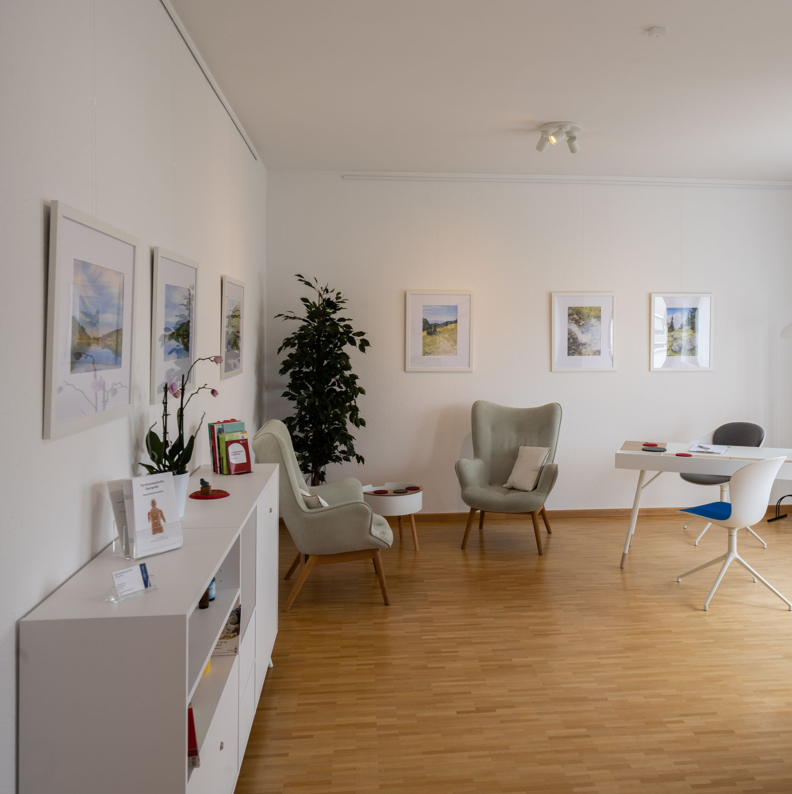

Für Führungskräfte, Unternehmer und Geschäftsführer
Wenn Verantwortung mehr Raum einnimmt als früher
Sie treffen Entscheidungen für andere, halten Belastung aus und bleiben auch in anspruchsvollen Phasen handlungsfähig. Genau deshalb kann es sinnvoll sein, die eigene Situation von Zeit zu Zeit bewusst zu überprüfen, nicht erst, wenn es nicht mehr geht.
Für Sie selbst
Typische Situationen
Wann eine Begleitung sinnvoll sein kann
Erholung, die wieder trägt
Anspannung gehört seit Längerem zum Normalzustand, und der Urlaub allein stellt sie nicht mehr um. Es geht darum, wieder zu einem Rhythmus zu finden, der auch über intensive Phasen hinweg belastbar ist.
Einen neuen Abschnitt bewusst gestalten
Eine neue Rolle, eine Übergabe, ein Verkauf, ein Wechsel. Beruflich oder persönlich beginnt etwas Neues, und es lohnt sich, die eigene Arbeitsweise bewusst darauf auszurichten, statt sie mitlaufen zu lassen.
Prioritäten neu ordnen
Vieles läuft weiterhin gut, und trotzdem entsteht der Wunsch, etwas neu zu sortieren. Was vor einigen Jahren richtig war, darf sich an dem ausrichten, was heute zählt.
Einen unabhängigen Gesprächsraum haben
Manche Fragen brauchen einen Ort außerhalb der eigenen Strukturen, an dem sich alles offen aussprechen lässt, weder gegenüber dem Unternehmen noch dem privaten Umfeld eingeschränkt.
Zwischen „weiter funktionieren“ und „alles hinschmeißen“ gibt es einen Raum für Klarheit.
Worum es geht
Themen einer Begleitung
Was im Einzelnen bearbeitet wird, ergibt sich aus Ihrer Situation. Häufig geht es um diese Themen:
- Selbstführung
- Klarheit und Entscheidungsfähigkeit
- Verantwortung und Delegation
- Prioritäten
- Belastungs- und Energiemanagement
- Regeneration und nachhaltige Leistungsfähigkeit
- Berufliche und persönliche Neuorientierung
- Ein langfristig tragfähiges Lebens- und Arbeitsmodell
Es geht nicht darum, Sie noch leistungsfähiger zu machen. Es geht darum, dass Leistung wieder aus einer tragfähigeren inneren Ordnung entstehen kann.
Innere Führung
Von welchem inneren Ort aus entscheiden Sie?
Innere Führung ist mehr als Selbstorganisation oder Disziplin. Sie stellt die Frage, aus welchem inneren Zustand heraus jemand Entscheidungen trifft. Aus Druck und dem Wunsch, Erwartungen zu erfüllen, oder aus einer klaren Wahrnehmung der eigenen Situation und Werte?
Wer täglich für andere entscheidet, verliert dabei manchmal den Zugang zu den Kriterien, die ihn selbst tragen.
Entscheidend ist nicht nur, welche Entscheidung wir treffen. Entscheidend ist auch, von welchem inneren Ort aus wir sie treffen.Wie eine Begleitung verläuft
Fünf Phasen
Der Prozess folgt einem natürlichen Rhythmus. Er ist kein starres Programm, Tempo und Schwerpunkte richten sich nach Ihrer Situation.
Standortbestimmung
Eine ehrliche Bestandsaufnahme: Wo stehen Sie beruflich und persönlich, was beschäftigt Sie, was soll sich verändern? Ohne Bewertung und ohne vorschnelle Einordnung.
Neuausrichtung
Wir prüfen, was weiterhin trägt und wo sich Prioritäten verschoben haben. Häufig zeigt sich hier, dass nicht mehr Anstrengung nötig ist, sondern eine andere Richtung.
Entfaltung
Neue Perspektiven und Handlungsmöglichkeiten entstehen. Was vorher als feststehend galt, wird beweglicher.
Umsetzung und Integration
Der entscheidende Schritt: Erkenntnisse gelangen in Führung und Alltag. Nicht nur erkennen, sondern erproben. Nicht nur entscheiden, sondern integrieren.
Inventur und Reflektion
Die Entwicklung wird regelmäßig überprüft und nachjustiert. Was hat sich bewährt, was braucht eine Korrektur?
Rahmen
Ein geschützter Raum
Viele Menschen, die ich begleite, tragen große Verantwortung und brauchen einen Rahmen außerhalb ihres beruflichen Umfelds. Was in den Gesprächen besprochen wird, bleibt dort.

Erster Schritt
Ein Gespräch, bevor Sie sich entscheiden
Vertraulich und unverbindlich. Wir klären, worum es geht, ob eine Begleitung passend ist und welche Form sinnvoll sein könnte.